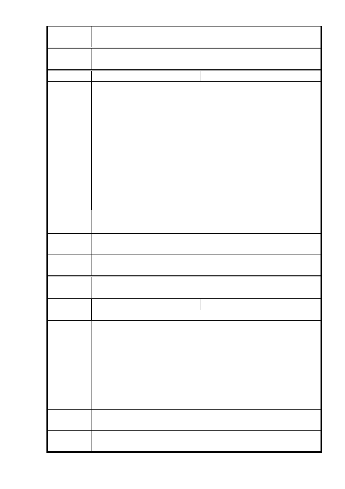

專案小組
審查結論
同編號 1。
委
決
員
會
議
同編號 1。
編號
15
陳情人 賴○嬑
反對市府都發局要蓋 1500 戶的出租住宅。
理由：
1. 北市、新北市空屋率高，其他空曠地多，蚊子館也多，沒必
要一定非得在精華地段蓋出租。
2. 人口老化、少子化，年輕人已陸陸續續計成長輩住屋，已不
缺住宅了，就像現在大學沒人讀要廢校。
陳 情 理 由 3. 只要是租屋，一定會引起髒亂、衛生、治安的問題，且流動
率大，反正不是自己的房子，不會維護，很不好管理。
4. 帶動附近居民生活品質下降！這叫社會福利嗎？開倒車後遺
症一堆。
5. 最後請市府開發案官員們行行好，在此拜託你們不要以你們
幾位來做決定好嗎？臺北綠地實在太少了，人民無法享受身
心健康幸福的環境！
建 議 辦 法 比照國外有名的大都市的代表性建物，是永遠性的地標，因旁就
是信義商圈，要有連貫性計畫，不要差距太大成為貧民區。
市府回應
意見
同編號13回復內容。
專案小組
審查結論
同編號 1。
委
決
員
會
議
同編號 1。
編號
16
陳情人 莊○平
陳情理由
有關廣慈開發案呈上一文意見：
一、 請主辦單位不要劃分為南北二區來開發。
二、 商業用放在福德街這是正當性，因為在幾年後捷運延長到
廣慈。
建 議 辦 法 三、 把社福用地、老人中心兩棟開發基地能盡量往南遷或放在
正中間用公園用地包圍二棟建地，這樣不但能使社福及老
人福利安養中心及一千五百戶公營住宅周邊市民都能享
受到公園（綠地）好的環境。
四、 站在市府主辦單位想也很樂意給市民有好環境居住。
市府回應
意見
1.有關調整分區規劃部分，同編號1回復內容。
專案小組
審查結論
同編號 1。
- 46 -